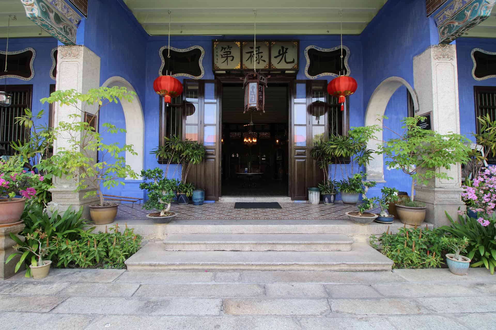
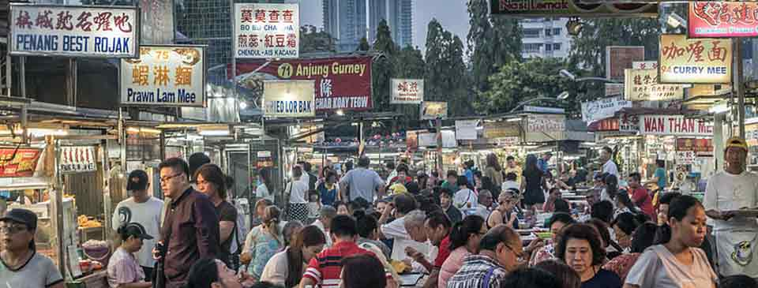
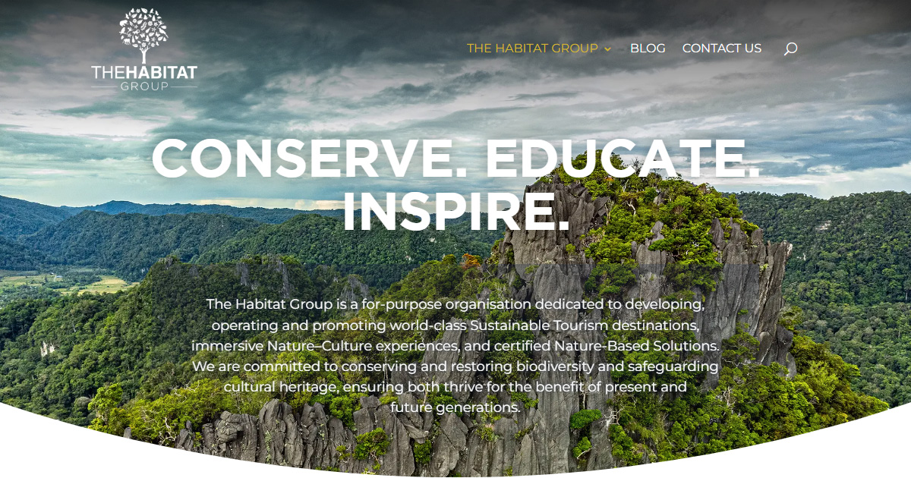
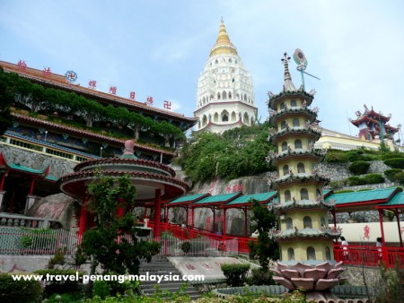
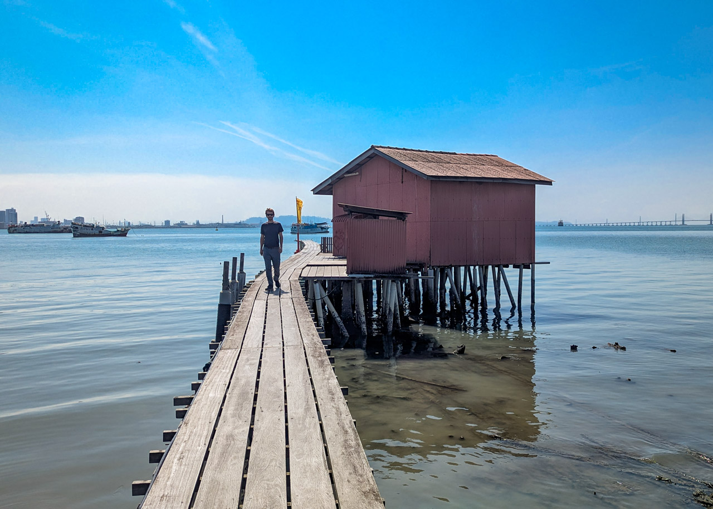
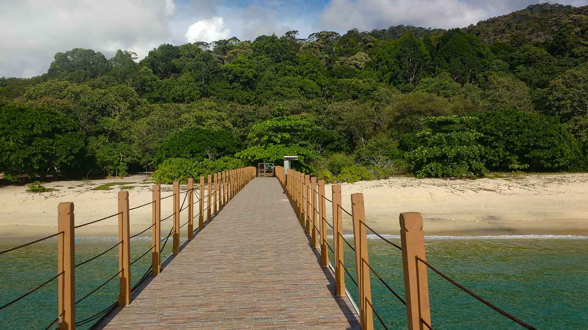

George Town · UNESCO heritage core · hawker-food capital
Penanga first-visit folio for a couple
One walkable heritage island you plan from George Town — eat the hawker legends, walk the UNESCO core, ride Penang Hill, and sleep inside the heritage.

The indigo Blue Mansion — sleep inside the heritage Zacharevic's lanes — the free open-air art trail
Zacharevic's lanes — the free open-air art trail
Build the trip around five things

The hawker legends
Charcoal char koay teow at Siam Road [1], a sunset graze at Gurney Drive [3].
The UNESCO core
The 2008-inscribed heritage zone [4] — street art [5], the gilded Khoo Kongsi [6], stilt-village Chew Jetty [7].


Kek Lok Si
Malaysia's largest temple [10], climbing the hill above Air Itam — free grounds, a small fee for the pagoda.
Inside the heritage
A restored shophouse or the indigo Blue Mansion — 18 rooms in a UNESCO-award restoration [11].
When to come
Quick flags before you pack
A suggested ~3-night plan
Three nights fits Penang as a single base: the George Town icons, a hawker crawl, the Penang Hill–Kek Lok Si morning and one nature day-trip.
Ferry in, then graze the night market
Ferry in from Butterworth (or coach from the Cameron Highlands), drop bags in George Town, and graze Gurney Drive Hawker Centre at sunset — char koay teow, rojak, cendol, one plate at a time [3].
The UNESCO core
Walk the street art lanes and iron caricatures [5], the gilded Khoo Kongsi clan house [6] and the Pinang Peranakan Mansion (the single best museum, ~€4–5) [20], then stilt-village Chew Jetty [7]. Book a Blue Mansion guided tour for the architecture [29].

Hill + temple, before the haze
Early Penang Hill funicular [8] and the paved The Habitat canopy walk before the crowds [9], then down to Kek Lok Si [10], with the famous Air Itam assam laksa at the foot of the steps [2].
Jungle, orchards, or vipers
Either a nature day-trip — the Penang National Park jungle trek to Monkey/Turtle Beach (moderate, ~1.5h each way, no guide) [21] or Balik Pulau countryside cycling through durian orchards [22] — or go offbeat to the Snake Temple of live pit vipers [23] and the haunted war tunnels.

The seven folios — go deeper
The exhaustive lists live in the seven axis pages — each its own field guide.
A Street-Food Pilgrim's Field Guide
Hawker legends, Michelin Bib stalls, kopitiams and one-star Nyonya, mapped by neighbourhood with EUR prices and closing days.
→ 55 sources · 17 minHeritage Shophouses & Grandes Dames
Restored shophouses, the Blue Mansion, the E&O, design conversions, Batu Ferringhi beach character and a hill retreat, with EUR bands.
→ 45 sources · 7 minSemi-adventurous activities & day-trips
Penang Hill + Habitat canopy walks, national-park treks, Balik Pulau cycling, kayaking, snorkelling and the street-art trail — each rated.
→ 42 sources · 9 minThe Unmissable Icons
George Town's UNESCO core, street art, clan houses, jetties, temples and Penang Hill, with 2026 hours, prices and booking lead times.
→ 45 sources · 9 minVipers, Ghost Tunnels & Pig-Blood Noodles
Twenty-odd weird, eerie and unexpected finds a first-timer walks straight past — pit vipers, haunted tunnels, carnivorous gardens, vanishing trades.
→ 43 sources · 7 minMuseums, Festivals & Crafts
When to come for the festivals, which museums and art spaces are worth it, and the heritage crafts you can try yourself in George Town.
→ 57 sources · 9 minGetting In, Out and About
How a couple based in George Town arrives, leaves and explores — hops from KL/Cameron Highlands, onward to Langkawi, local transport, the day-trip orbit.
→ 23 sources · 9 minMargin notes — cautions & changes
- The Habitat's Curtis Crest Tree Top Walk is under maintenance from 13 May 2026, with some areas temporarily closed — the Langur Way canopy walk stays open [25]. The National Park's own 250m canopy walkway is closed long-term [21].
- Penang State Museum (Farquhar St) has been in a RM20m restoration (slated to reopen end-2025) — confirm before going [26].
- Blue Mansion tours (11:00 & 15:30, max 24) sell out — book ahead [29].
- Thaipusam (Feb 2, 2026) brings the silver-chariot procession and big crowds to the Waterfall Temple [27]; the George Town Festival (Aug 1–9, 2026) is the arts peak, 80% free [28].
- Durian season (Jun–Aug) overlaps the wetter months — go mid-year if the fruit is the point, the dry window otherwise [14].
- Responsible travel: dress modestly at temples and mosques, don't handle the vipers at the Snake Temple [23], and treat the clan jetties as living homes, not a photo set.